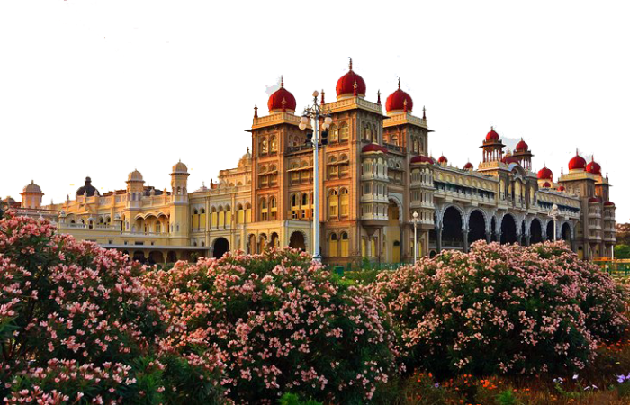

Mysore Palace is one of the most famous historical monuments in India. It is located in the city of Mysuru in the state of Karnataka. The palace was the royal residence of the Wadiyar dynasty, who ruled the Kingdom of Mysore for many years. The present palace was built in 1912 after the old wooden palace was destroyed by fire. It was designed by the British architect Henry Irwin. Mysore Palace is built in the Indo-Saracenic architectural style, which combines Hindu, Muslim, Rajput, and Gothic styles. The palace is known for its beautiful domes, large halls, and colorful glass windows. During the famous Mysore Dasara festival, the entire palace is decorated with nearly 100,000 lights, making it a spectacular sight. Every year, millions of tourists visit Mysore Palace to experience its history and beauty.
Wikipedia
